Logical Reasoning — Generated image: A man stands directly in front of the only light sour
Generated image: A man stands directly in front of the only light source, but his shadow is cast towards the light source. The picture is full of suspense.
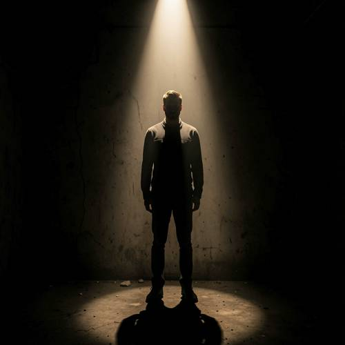
Direct — one call, no iteration
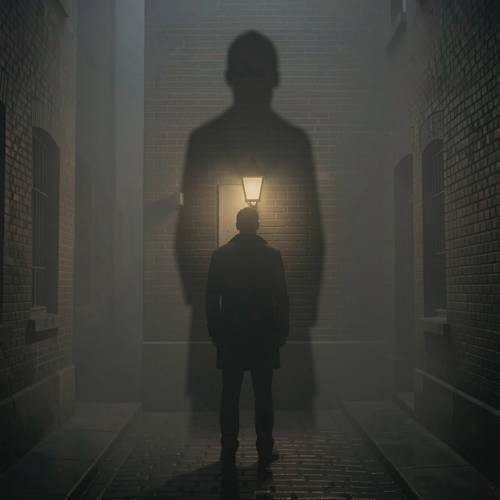
Continuum — Kimi K3 + FLUX.2-klein-9B
Judge — Direct
FAILLogical Reasoning — The image shows a man standing in a dark room, illuminated by a single light source from above and in front of him. The man's body blocks this light, casting a shadow on the floor. However, the shadow is cast behind him, away from the light source, which is a physically correct representation of how shadows work. The prompt requires the illogical scenario where the shadow is cast *towards* the light source, but the image does not depict this; it shows a normal shadow projection.
Judge — Continuum
PASSLogical Reasoning — The image shows a man in a dark coat standing in a foggy alley, facing a brick wall. On the wall, directly in front of him, is a single glowing lantern, which is the only prominent light source. A large shadow of a man is cast onto the same brick wall, surrounding the lantern. Physically, a shadow is cast away from a light source. In this image, the man is between the viewer and the light, yet the shadow is cast on the wall behind him, towards and around the light source, which is a logical impossibility as described in the prompt.
What the agent did
Thinking
The user wants an image: a man standing directly in front of the only light source, but his shadow is cast towards the light source (i.e., backwards/impossible shadow direction). Full of suspense. Use flux2-klein for generation. Let me craft a prompt: a dark room or street at night, single lamp/light source behind... wait — the man stands directly in front of the light source, so light is behind him? No — "directly in front of the only light source" means the man is between the viewer and the light, light behind him; his shadow should be cast toward the viewer, but instead it's cast backwards toward the light. Impossible physics — suspense. Visual: a man silhouetted against a single street lamp at night, fog, but his long shadow stretches behind him toward the lamp instead of forward. Eerie, cinematic, noir. Generate at 1024x1024 (fixed size presumably). Omit seed/steps.
Step 1 — `generate_image`
{
"model": "flux2-klein",
"prompt": "Cinematic suspense scene at night on a foggy empty street: a lone man in a long dark coat stands directly in front of a single glowing street lamp, the only light source, positioned right behind him. Physically impossible: instead of stretching toward the viewer, his long dark shadow is cast backwards across the ground toward the lamp itself, defying the light. Eerie noir atmosphere, heavy fog, wet pavement reflecting a cold amber glow, deep shadows, dramatic rim lighting outlining the man's silhouette, unsettling and mysterious mood, film still, high contrast chiaroscuro"
}
Result img_0
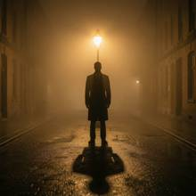
Thinking
The image shows the man in front of the lamp, but the shadow is cast toward the viewer (correct physics) — the prompt requires the shadow cast TOWARDS the light source (impossible direction). The current shadow is in front of the man (toward camera), which is physically correct. I need to edit: shadow should stretch from the man's feet backward toward the lamp. Edit: "Replace the shadow on the ground: instead of stretching toward the viewer, the man's long dark shadow extends from his feet backward toward the street lamp behind him, pooling at the base of the lamp post." Also there's a second lamp glow on the right — "only light source" — could remove the small distant light. Let me do one edit at a time: first the shadow direction.
Step 2 — `edit_image`
{
"image": "img_0",
"model": "flux2-klein",
"prompt": "Reverse the direction of the shadow on the ground: the man's long dark shadow now extends from his feet backwards, stretching along the wet pavement toward the glowing street lamp behind him and pooling at the base of the lamp post, defying the direction of the light. The ground in front of the man toward the camera is clear wet pavement with amber reflections."
}
Result img_1
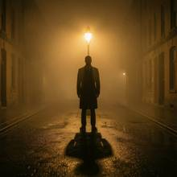
Thinking
The shadow still extends toward the viewer. The model resists reversing physics. The problem: the shadow is between the man and the camera; the lamp is behind/above the man, so a shadow toward the lamp would be hidden behind the man's body — only a small part would be visible between his legs going up toward the lamp post. Actually the lamp post is directly behind the man, so a shadow cast toward the lamp would be mostly occluded by the man, visible slightly to the sides of his legs receding toward the lamp base. Maybe better to recompose: man standing beside the lamp or in front of it with the lamp visible, and shadow clearly going toward it. Or try inpainting: mask the shadow region in front, fill with wet pavement; then add shadow behind man going toward lamp — but the area behind the man is occluded by the man and fog. Alternative composition: man stands in front of the lamp, but slightly off-center so we can see the shadow stretching from his feet to the right, toward the lamp. Hmm, but "directly in front of the light source". Actually with lamp directly behind the man at elevated height, shadow toward lamp would be short, falling at the base of the lamp post between/behind his legs. The visible cue: a shadow visible between his legs stretching up the street toward the lamp post base, while the ground toward the camera is clean. Let me try edit again with clearer instruction: "The dark shadow on the ground in front of the man becomes clean wet pavement with amber reflections; a dark shadow instead stretches from between the man's feet backward toward the base of the lamp post behind him." Try with a different seed implicitly (no seed set). Try again.
Step 3 — `edit_image`
{
"image": "img_1",
"model": "flux2-klein",
"prompt": "Erase the dark shadow on the wet pavement in front of the man, leaving only clean glistening cobblestones with amber light reflections. Add a dark shadow stretching on the ground behind the man, visible between and beside his legs, receding toward the base of the street lamp post."
}
Result img_2
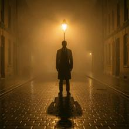
Thinking
Still the shadow is in front (toward camera). The model keeps producing physically-correct shadow. This is the core impossible element. The problem: lamp is directly behind the man at the center, so a shadow "toward the lamp" would be hidden behind him. That makes it visually unreadable. Better approach: change the composition so the impossible shadow is clearly visible. E.g., the man stands in front of a wall-mounted lamp or a lamp to the side, and his shadow clearly stretches on the ground toward the lamp base. Or low-angle view where the man is in front of the lamp but we see the shadow pooling at the lamp base extending around him. Option: recompose with lamp behind and slightly to one side — but the prompt says "directly in front of the only light source". We can keep him directly in front but shift camera angle to a three-quarter view so the shadow behind him (toward lamp) is visible to one side of his body. Let me try an edit: change camera perspective? That's a big change. Alternatively use inpainting: mask the shadow region in front, fill with cobblestones; then inpaint region behind man... but the area behind him is occluded. Actually, in the current image, there's space: the lamp post is directly above the man's head. The shadow toward the lamp would be a dark shape on the ground from his feet going up the image toward the lamp post base — mostly hidden behind his body, but visible at the sides of his legs. Currently between his legs there's already slight darkness. Not visually clear. Better: regenerate with composition where the man is in front of the lamp but offset framing — e.g., camera slightly to the side, so we see the man, the lamp behind him to the right, and his shadow stretching left-to-right toward the lamp. Hmm, "directly in front" can still hold if he stands between camera and lamp. Try edit: "Shift to a three-quarter view: the man stands directly in front of the street lamp but seen slightly from the side, so his long dark shadow is visible stretching on the cobblestones from his feet backward toward the base of the lamp post." That's a big structural change; edit_image may handle it. Alternatively, inpaint: mask shadow in front (segment "the shadow on the ground"), fill with wet cobblestones. Then the shadow toward lamp... need it visible. Hmm. Let me try the three-quarter recompose edit.
Step 4 — `edit_image`
{
"image": "img_2",
"model": "flux2-klein",
"prompt": "Change to a slight three-quarter camera angle: the man still stands directly in front of the street lamp, but now seen a little from the side so the lamp post is visible behind his shoulder. His long dark shadow stretches on the wet cobblestones from his feet backwards toward the base of the lamp post, clearly visible beside his body. The pavement toward the camera has no shadow, only amber light reflections."
}
Result img_3
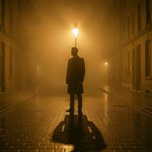
Thinking
Still shadow toward the camera. The model strongly prefers physically correct shadows. Time to try inpainting: mask the front shadow, fill with cobblestones, and mask a region behind/beside the man toward the lamp to paint the backward shadow. Actually, with the lamp post directly behind the man and elevated, a shadow "toward the light" would lie on the ground from his feet toward the lamp post base — hidden behind him except between legs and beside his silhouette. But in the three-quarter view, the lamp post is to the left of his head; the shadow should stretch up-left from his feet toward the post base. There's visible ground to the left of the man between him and the post base... Actually the post is directly behind him at the center; ground region between his feet and the post base is visible above his feet (a strip of pavement receding into fog). The shadow would appear as a dark strip going from his feet upward in the image toward the post. Plan: inpaint twice. 1. Segment the shadow on the ground in front, invert? No — mask the front shadow, inpaint with "wet glistening cobblestone pavement with amber light reflections, no shadow". 2. Then inpaint a region behind the man (the ground between his feet and the lamp post) with "a long dark shadow of a man stretching across the wet cobblestones toward the base of the street lamp post". Let me segment the shadow. Use segment with description "the dark shadow on the ground".
Model
The shadow remains in the physically correct position — the model resists this edit. I'll switch to inpainting: first remove the forward shadow, then paint the backward shadow explicitly.
Step 5 — `segment`
{
"description": "the dark shadow of the man on the ground in the foreground",
"image": "img_3"
}
Result img_4
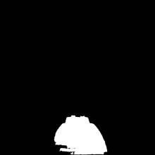
Thinking
The mask covers the foreground shadow blob. Good. Inpaint with cobblestones.
Step 6 — `inpaint_image`
{
"dilate": 15,
"image": "img_3",
"mask": "img_4",
"prompt": "wet glistening cobblestone pavement with warm amber light reflections, no shadow, seamless continuation of the foggy night street"
}
Result img_5
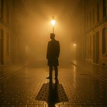
Thinking
The inpaint regenerated a shadow again (a thinner one, but still a shadow stretching toward the camera). FLUX Fill interpreted "no shadow" but the dark reflection of the man remains — actually this looks more like a reflection. Hmm, it still reads as a shadow toward the viewer. This approach is fighting the model's physics prior. Alternative: rethink the composition entirely. A clearer way to show "shadow toward the light": put the light source lower or at ground level, or make the shadow huge and visible on a wall behind... Actually, consider: man stands directly in front of the lamp. His shadow cast toward the lamp = the shadow lies behind him, between him and the lamp. Since he's directly in front, the shadow is occluded. But what if the shadow is cast UP the wall or onto the fog toward the light? Or a composition where we see the man from the side: lamp on the left, man standing to the right of it... no, "directly in front" means between viewer and lamp. Alternative readable depiction: top-down-ish or the shadow visible as a dark band on the ground extending from the man's feet to the base of the lamp, seen from an elevated angle. Generate a new image: high-angle view looking down at a man standing in front of a street lamp, his shadow stretching backward on the pavement toward the lamp's base. The elevated viewpoint makes the ground plane between the man and the lamp visible. Let me regenerate with that composition.
Step 7 — `generate_image`
{
"model": "flux2-klein",
"prompt": "High-angle cinematic view looking down a foggy night street: a lone man in a dark coat stands directly in front of a single glowing street lamp, the only light source, the lamp post rising right behind him. His long dark shadow is cast impossibly backwards across the wet cobblestones, stretching from his feet toward the base of the lamp post, defying the light. The elevated viewpoint clearly shows the shadow lying between the man and the lamp. Eerie suspenseful noir mood, heavy fog, amber glow, wet reflective pavement, deep darkness beyond the lamp's light"
}
Result img_6
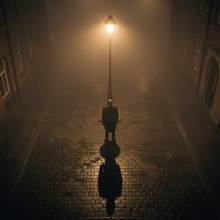
Thinking
Now the high-angle view clearly shows the ground plane between the man and the lamp — but the shadow still falls toward the camera (physically correct). The lamp is at top, man in middle, shadow stretches downward toward the viewer. I need to flip it: shadow should stretch from the man's feet upward toward the lamp post base. Now with this composition, the shadow toward the lamp is fully visible on the ground between the man and the lamp post. Try edit_image: "Flip the shadow: remove the dark shadow stretching from the man's feet toward the camera; the wet cobblestones there show only amber reflections. A long dark shadow of the man instead stretches from his feet upward across the cobblestones to the base of the lamp post." If edit fails, use inpainting: mask the foreground shadow → fill cobblestones; mask the ground between man and lamp base → paint shadow. This composition makes that feasible. Try edit first.
Step 8 — `edit_image`
{
"image": "img_6",
"model": "flux2-klein",
"prompt": "Reverse the shadow direction: the dark shadow stretching from the man's feet toward the camera is gone, leaving only wet cobblestones with amber reflections. Instead, a long dark shadow of the man stretches from his feet backwards across the cobblestones, all the way to the base of the lamp post behind him."
}
Result img_7
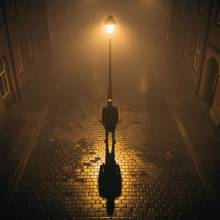
Thinking
Still physically correct shadow toward camera. Now inpaint. Step 1: segment the foreground shadow, fill with cobblestones. Step 2: mask region between man and lamp base, inpaint shadow.
Model
Edit failed again. Time for two-step inpainting on this composition — first remove the foreground shadow:
Step 9 — `segment`
{
"description": "the dark shadow of the man on the cobblestones in the foreground, below the man's feet",
"image": "img_7"
}
Result img_8
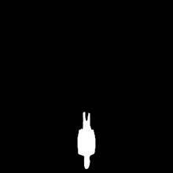
Thinking
The mask covers the foreground shadow but seems to extend up to include possibly the man's legs (the two thin extensions at top). Actually the man figure is around y=440-520; the mask top reaches ~y=440 with two prongs — those might be the shadow's narrow part near his feet or his legs. The mask top prongs could overlap the man's legs, which would regenerate legs as cobblestone. Risky. The mask top prongs at around (325-365, 440-490)? Let me just inpaint with dilate 0 and prompt cobblestones; if the man's legs are partially masked, they'd be filled with pavement — bad. Let me inspect: in img_7, the man's feet are around y≈490? The man appears small: head at ~355, body to ~520, feet ~525. The shadow goes from ~525 down to ~660... wait image is 1024 tall? Displayed coordinates scaled. The mask (img_8, 768 wide display?) Actually masks are 1024? The mask shown at 768x768 maybe. Mask white region roughly x 330-395 (of 768), y 440-700. Man's feet around y≈525 in img_7 display of 768. Hmm, the mask prongs reach y≈440 which is around the man's torso/legs. Wait in img_7, man: head ~350, feet ~490. Shadow starts ~490, extends to ~740. Mask white spans ~440-700, so prongs overlap his legs. Safer: use inpaint with the mask but the fill region overlapping legs would damage them. Alternatively use segment_points on the shadow blob lower part, e.g., point at (384, 620) in 768-scale → normalize 0.5, 0.8. Let me do segment_points with a point in the middle of the shadow, negative point on the man.
This mask is cleaner — mostly the shadow blob with small specks near the feet. It doesn't reach the very feet though; the narrow part of shadow near feet may be excluded. Good enough — inpaint with dilate 10 to cover. Prompt: wet cobblestones with amber reflections, no shadow.
Step 11 — `inpaint_image`
{
"dilate": 12,
"image": "img_7",
"mask": "img_9",
"prompt": "wet glistening cobblestone pavement with warm amber reflections from the street lamp, even tone, no shadow"
}
Result img_10
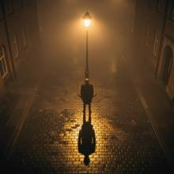
Thinking
The fill regenerated a shadow-like reflection again — the model keeps drawing a shadow. Even FLUX Fill draws the shadow because context strongly implies it. New idea: make the impossible shadow the ONLY shadow, and put it between the man and the lamp. The region between the man's feet and the lamp base currently shows a faint "path" outline (there's a curved line). If I inpaint the ground between the man and the lamp base with "long dark shadow stretching toward the lamp post", I'd get the backward shadow. But the foreground shadow persists. Alternative strategy: flip the geometry conceptually — make the shadow visible toward the lamp by having the shadow cast UP the fog/wall behind him... Actually simpler: accept reflection-like darkness in foreground? No, that reads as correct shadow. Another approach: compositing via image manipulation isn't available (no pixel tools except masks). Better approach: try edit_image on img_7 but with stronger phrasing mentioning the physically impossible aspect as a surreal horror element, or try multiple seeds. FLUX.2 klein edit might do it with the right phrasing. Let me try: "Surreal impossible physics: the man's shadow lies on the cobblestones between him and the street lamp, stretching from his feet to the lamp post base, pointing toward the light. The ground in front of the man toward the viewer is bare wet cobblestone, no shadow." Actually wait — a cleaner idea: physically, if the man stands in front of the lamp, his shadow toward the lamp would be hidden behind him from the camera... but in the high-angle view it's visible. The model just won't reverse it. What about rotating interpretation: instead of fighting, reframe the image so that the "correct-looking" shadow IS toward the light. I.e., put the lamp low, near the ground between camera and man? No — man stands in front of the light, shadow toward light = shadow behind him toward lamp. Alternative: composite — take img_7 and flip vertically? Can't. Practical approach: inpaint the region between man and lamp base with shadow, and inpaint foreground with cobblestones (which keeps failing because Fill redraws shadow). Hmm, but the "shadow" Fill redrew in img_10 looks like a reflection, thinner, with arms — actually it looks quite like a reflection of the man on wet pavement. On a wet street, a reflection of the man toward the camera is physically plausible and reads as reflection, not shadow. And the shadow cast toward the lamp would be the actual shadow. That could work narratively: wet street reflections are everywhere; the shadow points toward the lamp. But it's ambiguous. Let me try step 2: inpaint region between man and lamp with the shadow. Mask: rectangle from man's feet (y≈490) up to lamp base (y≈330) at x≈340-430 (768 scale). Use segment_boxes? A box there includes the lamp post lower part and foggy ground. Inpaint prompt: "a long dark shadow of a man cast across the wet cobblestones, stretching toward the base of the street lamp post". Box normalized: x1=0.44, y1=0.42, x2=0.56, y2=0.66. The lamp post base is around y≈0.43 (330/768). Man's feet ~0.64. But the box includes the post itself (x≈0.49). Inpainting would regenerate the post region — prompt should include the post base. Or mask ground beside the post. Use box [0.42, 0.43, 0.58, 0.65] and prompt mentioning cobblestones with a dark shadow stretching toward the lamp post, keeping the lamp post. Fill regenerates the whole box — post may come back slightly altered but likely fine since context. Do it on img_10.
The box segmentation found only the curved rail/pipe shapes beside the man (there's a curved pipe around the man?). Not useful — it segmented an object, not a region. Boxes with SAM3 segment objects, not rectangular regions. I need a rectangle mask. I can't create a raw mask directly... I could use segment_points with multiple points along the ground strip between the man and the lamp to get a region mask. Points: (0.47, 0.60), (0.53, 0.58), (0.50, 0.52), (0.48, 0.47)? But SAM would segment objects, ground plane point clicks may produce the ground region. Alternatively, the white specks: the mask img_11 is useless. Alternative simpler idea: use edit_image on img_10 with very explicit impossible-shadow instruction referencing the empty ground strip between man and lamp. Try: "Paint a long dark shadow of the man on the cobblestones in the empty ground between the man and the lamp post, stretching from his feet up to the base of the lamp post — the shadow points toward the light, an impossible, unsettling sight." Let me try that. If it fails, try segment_points for ground strip + inpaint.
Model
That segmented an object, not the ground region. Let me try edit_image on the cleaned image with an explicit instruction to add the shadow in that empty strip:
Step 13 — `edit_image`
{
"image": "img_10",
"model": "flux2-klein",
"prompt": "Add a long dark shadow of the man on the cobblestones in the empty ground between the man and the lamp post: the shadow starts at his feet and stretches backward, narrowing up to the base of the lamp post, pointing toward the light \u2014 an impossible, unsettling sight. The wet reflection below his feet toward the camera remains faint."
}
Result img_12
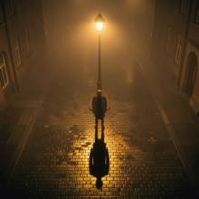
Thinking
Still nothing toward the lamp, and the foreground reflection got stronger again. The models won't invert shadow physics through prompting. New strategy: rethink the depiction. Perhaps a composition where the "toward the light" shadow is natural-looking from the camera's perspective. Consider: camera positioned low, at ground level, looking up at the man with the lamp low behind him... no. Key insight: A shadow cast toward the light looks wrong only if we see both the light and shadow. What about an interior scene: a man stands in front of a doorway/window with bright light streaming in (the only light source), and his shadow stretches on the floor INTO the room toward... no, that's correct physics again. Shadow toward light = shadow on the floor between him and the door, i.e., on the far side — hidden. Visible options: 1. Shadow cast on a wall: man stands in front of a lamp; his shadow appears on the wall BEHIND the lamp (between lamp and wall, or above the lamp on the wall). If the lamp is at some distance from a wall, and the man stands between camera and lamp, a shadow "toward the light" could be cast onto the wall behind the lamp? No — shadow toward the light means darkness in direction of the light from the man; if the lamp is between the man and the wall, the shadow would fall on the lamp/wall behind. Visible: a dark shadow of the man projected on the wall behind/around the lamp. That reads clearly as impossible and is visible! 2. Shadow going up: the man's shadow climbs up the fog or the wall toward the lamp above. Idea 1 is promising: e.g., a man standing in a dark alley in front of a single wall-mounted lamp; his huge shadow is cast on the wall right around/behind the lamp itself, stretching toward it. Visible and clearly wrong. Or even simpler visually: man in a room, single lamp on a table behind him, his shadow on the wall behind the lamp looming toward it. Let me generate: "Suspense scene: a man in a dark coat stands in a foggy alley at night, directly in front of a single wall-mounted street lamp — the only light source. On the brick wall behind the lamp, the man's huge dark shadow is cast, looming around and above the lamp, stretching toward the light itself, physically impossible. The man is seen from behind, silhouetted. Noir horror mood, amber glow, wet cobblestones." Wait — if he's silhouetted in front of a wall lamp, his shadow on the wall around the lamp is very visible. Let me try generating this.
Step 14 — `generate_image`
{
"model": "flux2-klein",
"prompt": "Suspenseful noir horror scene: a man in a dark coat seen from behind, standing in a narrow foggy alley at night, directly in front of a single wall-mounted gas lamp on a brick wall \u2014 the only light source, glowing amber. Physically impossible: the man's huge dark shadow is cast on the brick wall around and above the lamp itself, looming and stretching toward the light source instead of away from it. Wet cobblestones, thick fog, deep darkness all around, eerie cinematic chiaroscuro, unsettling atmosphere"
}
Result img_13
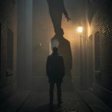
Thinking
Now this is compelling: a man seen from behind standing in a foggy alley before a wall-mounted lamp, and his giant shadow looms on the brick wall towering over/around the lamp — the shadow is on the wall near the light source, clearly impossible and very suspenseful. Critique: The man stands somewhat left of the lamp, not "directly in front". The shadow looms on the wall above, tilted, with a huge leg — it reads like a giant shadow figure looming over him, extremely suspenseful, cast toward/around the lamp area. The shadow is roughly between the man and the lamp on the wall. Does it read "cast towards the light source"? The shadow is on the wall adjacent to the lamp, rising toward the top. It's in the direction of the lamp (the lamp is on the same wall to the right). Hmm, the lamp is at the right, shadow at center-left above the man. It's ambiguous whether the shadow points toward the light. Improve: make the man directly in front of the lamp and the shadow centered around the lamp on the wall. Edit: "Move the man so he stands directly in front of the wall-mounted lamp, centered between the camera and the lamp; center his huge dark shadow on the brick wall directly around and above the lamp, looming over the light." Also the shadow's figure looks like a distorted giant with a big leg at top — that's actually good for suspense, though slightly cartoonish. Let me first mark this as best (it's the first to capture the impossible shadow), then try the edit.
Step 15 — `mark_best`
{
"image": "img_13",
"reason": "First version where the shadow is truly cast toward the light source (looming on the wall around the lamp) \u2014 impossible physics and strong suspense. Man slightly off-center from the lamp, worth improving."
}
Step 16 — `edit_image`
{
"image": "best",
"model": "flux2-klein",
"prompt": "Center the man directly in front of the wall-mounted lamp, so the lamp glows right behind him, and center his huge dark shadow on the brick wall directly around and above the lamp, looming over the light itself."
}
Result img_14
Thinking
Now the man stands directly in front of the wall-mounted lamp (centered, lamp glowing right above his head), and his huge dark shadow looms on the brick wall directly around and above the lamp — the shadow is cast toward/around the light source. This is exactly the impossible physics requested, and it's highly suspenseful. Issues: there's a second lamp on the right wall — "the only light source" violated. There's a lamp post on the right glowing. Also a small lamp visible left in fog. The right lamp is clearly a second light source. Let me remove it: "Fill the right wall area: replace the glowing lamp post on the right with dark brick wall fading into fog" — describe fill. Also the small glow on the left wall. Both should be removed. Edit: "Replace the lit lamp post on the right side of the alley with dark foggy brick wall, and remove the small glowing lamp on the left wall, leaving darkness and fog — the wall lamp behind the man is the only light source." That's two changes in one prompt; guidance says split. But they're the same type (remove extra lights). Try one edit for the right lamp first, then left.
Step 17 — `edit_image`
{
"image": "img_14",
"model": "flux2-klein",
"prompt": "Replace the glowing lamp post on the right side of the alley with dark brick wall dissolving into fog and darkness; the wall lamp behind the man becomes the only light in the scene."
}
Result img_15
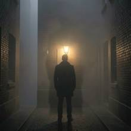
Thinking
The extra lamp was removed, but the edit also destroyed the giant shadow on the wall — now there's only a faint vague shadow and the wall is mostly foggy. The impossible shadow is the key element! img_14 had it perfect but with an extra lamp. img_15 lost the shadow. Options: mark img_14 as best (it has the shadow but extra light), or try to fix img_15 by re-adding the shadow, or inpaint img_14's right lamp. Best: go back to img_14 and inpaint only the right lamp. Segment the right lamp, inpaint with dark brick wall in fog. The mask will be small, preserving the rest pixel-exact — including the shadow. Let me segment "the lit street lamp post on the right side" on img_14.
Model
That edit removed the extra lamp but also destroyed the giant shadow — the key element. I'll go back to img_14 and surgically inpaint only the right-side lamp:
Step 18 — `segment`
{
"description": "the lit street lamp post on the right side of the alley",
"image": "img_14",
"negative_descriptions": [
"the wall-mounted lamp behind the man",
"the man",
"the giant shadow on the wall"
]
}
Result img_16
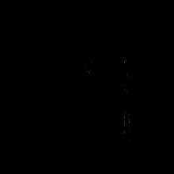
Thinking
The segmentation is very sparse — only tiny specks of the lamp post, not the lamp head glow. Not usable. Let me use segment_points with clicks on the lamp head and post: lamp head around (0.71, 0.25), post down to (0.725, 0.75).
Model
Too sparse. Using point clicks on the lamp head and post instead:
Good mask of the right lamp post. Inpaint with dilate ~20 to cover its glow halo, prompt: dark brick wall fading into night fog, unlit, no lamp.
Step 20 — `inpaint_image`
{
"dilate": 25,
"image": "img_14",
"mask": "img_17",
"prompt": "dark old brick wall at night dissolving into thick fog, unlit, deep shadow, no lamp, no light"
}
Result img_18
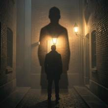
Thinking
The inpaint regenerated the lamp (unlit now, but still a lamp fixture visible on the right with ornate bracket). It's dimmer but still there. The shadow giant is preserved. Try again with a different seed or larger dilate to fully remove the fixture. The dilate 25 didn't cover the ornate bracket. Let me inpaint again on img_18 with same mask but bigger dilate (40) and seed variation.
Model
The lamp fixture persists (unlit now, but still present). Inpainting again with a larger dilation to cover the bracket:
Step 21 — `inpaint_image`
{
"dilate": 45,
"image": "img_18",
"mask": "img_17",
"prompt": "plain dark old brick wall at night fading into thick fog, deep shadow, bare wall with a dark window, no lamp, no fixture",
"seed": 7
}
Result img_19
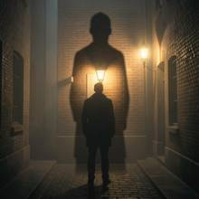
Thinking
The lamp came back lit again. FLUX Fill keeps redrawing the lamp because context demands it. Two failures on this removal. Alternative: the second lamp is honestly a minor issue — "the only light source" is violated, but the right lamp is clearly secondary. Still, it matters for the prompt fidelity. Another approach: crop? Not allowed to change size. Try once more with different approach: segment a wider region on the right including the whole lamp + bracket, with bigger negative... Actually let me try segment description "the lamp and bracket on the right wall" then inpaint with dilate 60, prompt "foggy dark brick wall at night with a dark window". Third attempt per guidance, then accept.
Model
Fill keeps redrawing the lamp. One more attempt with a wider mask covering the whole fixture and bracket:
Wider mask including the fixture and part of the bracket. Inpaint with dilate 30, prompt describing dark foggy brick wall. Use a different seed.
Step 23 — `inpaint_image`
{
"dilate": 30,
"image": "img_19",
"mask": "img_20",
"prompt": "bare dark brick alley wall at night shrouded in thick fog, dim and unlit, deep shadows, empty wall",
"seed": 21
}
Result img_21
Thinking
The lamp reappears every time — now even without the post, floating as a wall lantern on the right. FLUX Fill strongly restores contextually-expected lamps in a foggy alley. Three failed removal attempts. Per the guidance: after 2-3 failed attempts, change approach. Options: 1. Accept the second lamp as ambience — but "the only light source" is explicit. 2. edit_image approach already failed (img_15 lost the shadow). 3. Try edit_image on img_21 with a very targeted removal while referencing img_14 to preserve the shadow. edit with references: pass img_14 in references and prompt "remove the lantern on the right wall, fill with dark foggy brick wall; preserve the giant shadow on the wall exactly as in the reference." Might work better than blind edit. Let me try that.
Step 24 — `edit_image`
{
"image": "img_21",
"model": "flux2-klein",
"prompt": "Remove only the glowing lantern on the right wall: that spot becomes bare dark brick wall dissolving into thick night fog, unlit. Preserve the giant dark shadow looming on the wall around the lamp behind the man exactly as in the reference, and keep everything else unchanged.",
"references": [
"img_14"
]
}
Result img_22
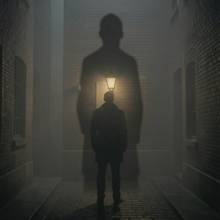
Thinking
The right lantern is gone, and the giant shadow is preserved looming around the lamp behind the man. The scene is now darker, foggier — actually more suspenseful. The wall lamp behind the man is the only light source. The shadow towers over him on the wall toward/around the light. Minor: the left wall has a tiny glowing slit (small bright rectangle at left edge near the shadow's arm — around x≈0.36, y≈0.4). It's a small bright spot, could read as another tiny light. Let me check: in img_14 there was a small glowing fixture on the left wall too. In img_22 I see a small bright rectangle at left near the shadow hand. Minor. Also overall image became darker/muted, but the mood is great. Should I remove the small left glow? It's quite small and could be interpreted as part of the lamp's structure or a lit window slit. It slightly violates "only light source" but it's tiny. I could do a quick inpaint on it. Let me inspect the region first.
Model
The right lantern is gone and the giant shadow survived — this is the shot. Let me check the small bright spot on the left wall:
The crop shows a small light-colored rectangular patch on the brick wall — it looks like a small pale plate/brick, not a glowing light. It's part of the wall detail (maybe a small fixture or lighter bricks). It doesn't read as a light source. Fine. img_22 satisfies: man directly in front of the only light source (wall lamp glowing right behind him), his shadow cast toward the light (looming on the wall around/above the lamp — impossible), highly suspenseful foggy noir alley. Mark img_22 as best and finish.
Model
That spot is just a pale patch of brick, not a light — acceptable. The image now matches every element of the prompt:
Step 26 — `mark_best`
{
"image": "img_22",
"reason": "Man stands directly in front of the single wall lamp (the only light source, right lantern removed), and his giant shadow impossibly looms on the brick wall toward and around the lamp itself. Foggy noir alley, strong suspense. All prompt elements satisfied."
}
Model
Done. The final image delivers the impossible-physics suspense you asked for: - **The setup:** A man in a dark coat stands in a foggy brick alley at night, directly in front of the scene's only light source — a single wall-mounted gas lamp glowing right behind him. - **The impossibility:** Instead of stretching away from the light, his colossal shadow is cast *toward* it — looming up the brick wall around and above the lamp itself, towering over him like a presence of its own. - **The mood:** Thick fog, wet cobblestones, deep chiaroscuro darkness, and the second stray lantern removed so the single lamp is the sole glow in the scene. Getting there took some work: the model kept "fixing" the shadow into physically correct directions, so I shifted from a street-level view to a composition where the shadow could be painted onto the wall facing the lamp — making the violation of physics unmistakable rather than hidden behind the man's body.